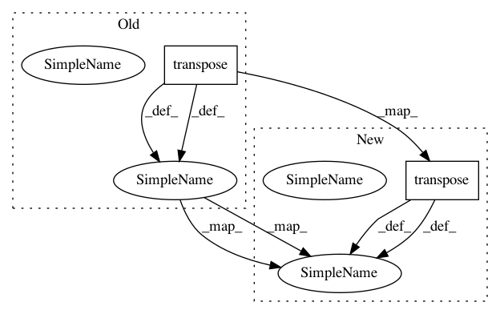

fe27bfbdd816ef90510cdd579a6642520ca5eda7,chainercv/links/model/ssd/transforms.py,,resize_with_random_interpolation,#,226
Before Change
inter = random.choice(inters)
cv_img = cv2.resize(cv_img, size, interpolation=inter)
img = cv_img.astype(np.float32).transpose(2, 0, 1)[::-1]
if return_param:
return img, {"interpolation": inter}
After Change
if len(img.shape) == 2:
img = img[:, :, np.newaxis]
img = cv_img.astype(np.float32).transpose(2, 0, 1)
if return_param:
return img, {"interpolation": inter}
else:
In pattern: SUPERPATTERN
Frequency: 5
Non-data size: 2
Instances
Project Name: chainer/chainercv
Commit Name: fe27bfbdd816ef90510cdd579a6642520ca5eda7
Time: 2017-06-20
Author: Hakuyume@users.noreply.github.com
File Name: chainercv/links/model/ssd/transforms.py
Class Name:
Method Name: resize_with_random_interpolation
Project Name: chainer/chainercv
Commit Name: fbbfa4a2123ce41969230d531000b5836f1ab399
Time: 2017-08-07
Author: Hakuyume@users.noreply.github.com
File Name: chainercv/utils/image.py
Class Name:
Method Name: write_image
Project Name: keras-team/keras
Commit Name: 48c1c96ac4cfec5580a5feb7eb7ef7c25c6db234
Time: 2018-10-29
Author: gabrieldemarmiesse@gmail.com
File Name: keras/backend/tensorflow_backend.py
Class Name:
Method Name: ctc_label_dense_to_sparse
Project Name: chainer/chainercv
Commit Name: 5173f180d75df1e751689d37692e729f45e416a6
Time: 2017-05-18
Author: yuyuniitani@gmail.com
File Name: chainercv/links/model/faster_rcnn/region_proposal_network.py
Class Name: RegionProposalNetwork
Method Name: __call__